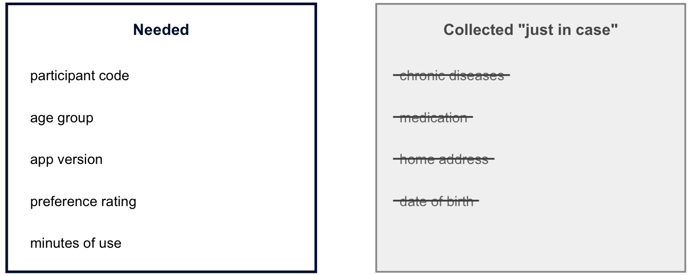
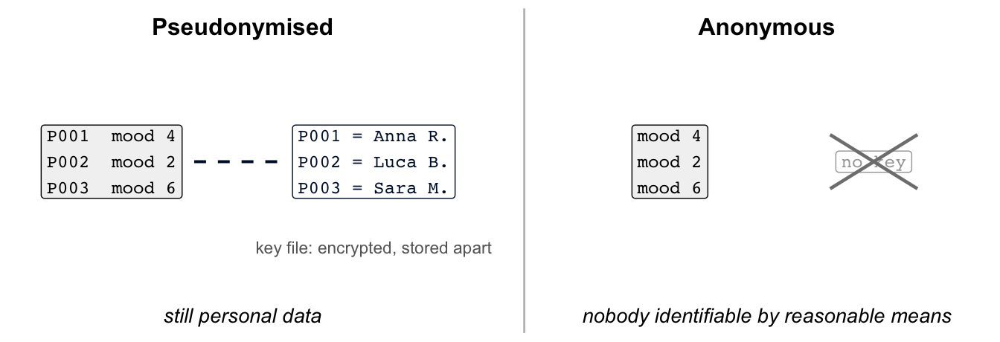
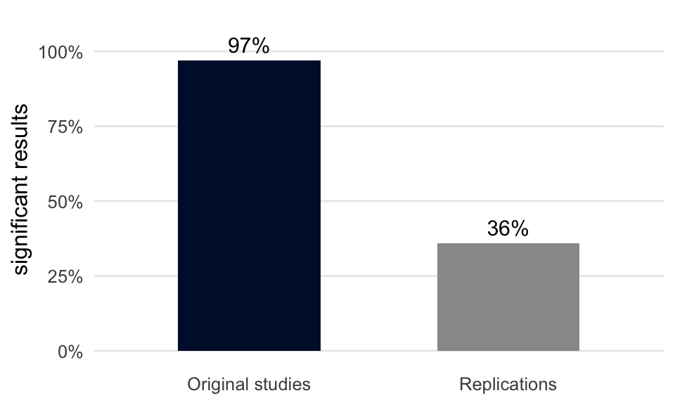
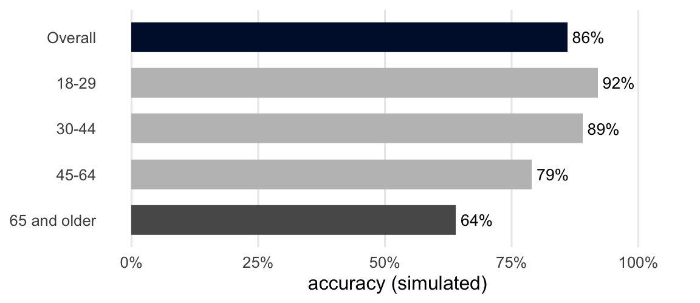

3 Research Ethics and Data Privacy
Written for this book by Cristiano Costa, with Giorgio Arcara. This chapter is not in Irizarry’s Introduction to Data Science.
Imagine we want to study how mood and depressive symptoms fluctuate in everyday life. Participants install an app that asks them five times a day how they feel and how strongly they experience a few depressive symptoms. Every evening they write a short entry in a free-text journal. A smartwatch records heart rate and sleep, and the phone’s GPS records how far they move each day, because physical activity is related to mood. From a data-science perspective, this is an attractive design. We obtain repeated measurements in the real world, physiological data can be aligned with subjective reports, and individual changes can be followed over time.
But consider what the resulting dataset may reveal. The smartwatch shows that a participant is still awake at 2 a.m. The GPS shows where they live and that, at 11 a.m., they spent an hour at a mental-health clinic. At 4 p.m. their heart rate spikes. At 10 p.m. the journal reads: “I can’t go on like this.” No name appears anywhere, yet the dataset tells us a great deal about one person’s life. Behavioural data can become highly informative very quickly. This creates scientific opportunities, but also responsibilities. Research ethics is therefore not something that happens only when a participant signs a consent form. Ethical decisions are involved in deciding what to collect, how to collect it, how long to retain it, who may access it, how it is analysed, and whether it can later be shared.
3.1 Why ethics is part of research
Research with human participants is guided by broad principles including respect for autonomy, beneficence and non-maleficence, justice, and scientific integrity. Respect for autonomy means treating participants as people capable of making decisions about whether and how they take part in research: each person decides whether to take part, how, and for how long, and can stop at any time. Beneficence and non-maleficence concern the balance between the potential value of the research and the risks or burdens imposed on participants. Justice concerns how the benefits and burdens of research are distributed. A population should not be selected simply because it is easy to recruit or has less power to refuse participation.
Scientific integrity concerns the responsibility to design, analyse, and communicate research honestly and rigorously. These principles are connected. A badly designed study is not only a methodological problem (study design is the topic of Chapter 4). If participants contribute their time, personal information, discomfort, or exposure to risk to a study that cannot meaningfully address its stated question, this can also become an ethical problem. Ethical and legal requirements are also not identical. Something may be technically possible, or legally permissible under particular conditions, without being a good research decision. In our mood study, GPS is there to compute how far participants move each day. The daily distance is what we need; the raw coordinates are not. A continuous trace of positions would also show where each person lives, works, and seeks care, and recording it simply because the phone makes it available may be difficult to justify when only the daily total needs to be stored. A useful rule of thumb is:
Collect what you need, not everything you can collect.
The rule applies to the simplest studies too. Suppose the research question is which of two versions of an app users prefer. To answer it, we need a participant code, an age group, the version each person used, their preference rating, and perhaps how many minutes they used the app. It is tempting to add a few questions “just in case”: chronic diseases, medication, home address, date of birth (Figure 3.1). None of them is needed for the question, and health information is among the most sensitive kinds of personal data (see Personal and sensitive data). Data that are never collected cannot be lost, leaked, or misused.
In Italy, psychological research is guided, among other sources, by the Code of Ethics of the Italian Association of Psychology (AIP), which was updated in May 2025 and is complemented by guidance on internet-mediated research and generative AI.1
3.2 Ethical approval and informed consent
Before data collection begins, researchers need to consider the study’s risks, benefits, procedures, recruitment methods, and handling of participant data. In research, these elements are evaluated by an Ethics Committee (in the United States, an Institutional Review Board, or IRB). Researchers submit the study protocol, the information given to participants, and the consent form, and the committee must approve them before any data are collected. Researchers cannot simply write a consent form on their own and start recruiting. Ethics review is not simply an administrative step. Its purpose is to provide an independent assessment of whether participants are adequately protected and whether potential risks are proportionate to the scientific aims. Outside research, for example when a company collects and stores data about its users, there may be no ethics committee, but the applicable laws on data protection still apply. A central component of ethical research is informed consent.
Participants should receive information that allows them to understand what they are agreeing to. This normally includes the purpose of the research, relevant procedures, expected duration, potential risks or discomforts, and the possibility of refusing or discontinuing participation. Consent also needs to be voluntary. A participant should be able to refuse or withdraw without inappropriate negative consequences. This is especially important when the researcher has authority over the participant or when incentives are offered.
Technology-based studies require particular care because much of the data collection may happen in the background. In our mood study, participants wear a smartwatch for several weeks. Saying only that “physiological data” will be collected is not particularly informative. Participants should be given an understandable account of what the device records, which variables researchers will access, how frequently data are recorded, whether data leave the device, and what happens to them after collection.
The same applies to smartphone research. An app may collect timestamps automatically. A sensing application may record activity or location in the background even when participants are not actively responding. Researchers therefore need to understand their own data pipeline before they can adequately explain it to participants. It is also important to distinguish consent to participate in research from the legal basis for processing personal data. Under the GDPR, consent is one possible legal basis, but it is not the only one relevant in research contexts.2
The practical lesson is not that behavioural scientists should become data-protection lawyers. Rather, they should avoid assuming that a participant’s signature on a study consent form automatically resolves every issue concerning personal data.
3.3 Vulnerable participants and freedom of consent
Some research contexts require additional safeguards because participants may find it harder to make a genuinely free decision about participation or may face greater consequences if something goes wrong. The term vulnerability covers different situations. Children and some people with cognitive impairment may have limited ability to understand the implications of participation. Clinical populations may face particular physical or psychological risks. People in institutional settings may have reduced freedom to decline. Socially marginalised groups may face particularly serious consequences if identifiable information is disclosed.
AIP has emphasised that vulnerability should be considered in relation to the circumstances of the research rather than treated simply as a fixed label attached to a group.3
Power relationships
Vulnerability can also arise from relationships of power. Suppose a lecturer invites students enrolled in their own course to participate in a study. Participation may be described as voluntary, but students may still worry that declining could influence how they are perceived. Similar issues can arise when employers recruit employees, clinicians recruit their own patients, or researchers recruit people who depend on an institution for services. The question is therefore not only whether a consent form exists, but whether saying “no” is meaningfully possible.
Consent, assent, and legal representatives
When a participant cannot legally provide valid consent, permission may need to be obtained from a parent, guardian, or another authorised representative. However, this does not mean that the participant’s own preference becomes irrelevant. When the person can understand the research sufficiently to express a view, their assent should also be sought and respected where appropriate. The current Italian professional code for psychologists requires prior informed consent in research, protects the freedom to grant, refuse, or withdraw it, and provides additional safeguards when a person cannot validly consent independently.4
Incentives
Payment and other incentives also deserve attention. Compensating participants for time, inconvenience, or expenses is common and often appropriate. However, a very large incentive may create pressure to accept burdens or risks that a person would otherwise prefer to avoid. There is no universal monetary threshold that separates appropriate compensation from undue influence. The ethical question is whether the incentive compromises the freedom of the decision.
3.4 Deception and debriefing
Sometimes telling participants the complete purpose of a psychological experiment in advance would alter the behaviour we want to study. Suppose we are investigating whether people change how often they check their smartphone when they believe they are being socially evaluated. Fully explaining the hypothesis at the start may make participants unusually aware of their checking behaviour. Researchers may therefore sometimes use deception or temporarily withhold specific information. This requires strong justification.
Deception should be scientifically necessary, proportionate to the question, and designed to minimise harm. Researchers should also consider whether a less deceptive alternative could answer the same question. Information that would reasonably change a person’s willingness to participate in a study involving substantial risk should not simply be concealed for methodological convenience. Afterwards, participants should normally receive a debriefing explaining the true purpose of the procedure and correcting misleading or incomplete information.
Debriefing should help participants understand what happened, why deception was considered necessary, and how their data will be used. Italian professional guidance specifically requires researchers to provide missing information after the experimental activity or data collection when the nature of the research prevented complete prior disclosure, and to obtain authorisation for use of the collected data.
3.5 Personal and sensitive data
Under the GDPR, personal data are information relating to an identified or identifiable natural person. Identification does not require a person’s name to appear in the dataset. Names, email addresses, or participant IDs linked to a lookup table are obvious examples. But people can also be identifiable indirectly through location information, device identifiers, physiological characteristics, or combinations of variables. This is particularly important in behavioural data science. Imagine a dataset containing no names but including precise timestamps, GPS locations, age, occupation, and smartwatch activity. Identifying a participant may become relatively straightforward if the data reveal where that person sleeps, where they work, and which routes they regularly travel.
Table 3.1 shows three fictional rows of such a dataset.
| Date-time | GPS area | Age | Occupation | Steps |
|---|---|---|---|---|
| 02/03 07:41 | Mestre | 51 | bus driver | 9,310 |
| 02/03 07:44 | Venice Lido | 34 | paediatric nurse | 12,840 |
| 02/03 07:52 | Mestre | 29 | student | 4,105 |
There are no names. But how many 34-year-old paediatric nurses live on the Venice Lido? Probably very few, and anyone who knows one of them could recognise the second row.
Even variables that seem harmless in isolation may become identifying when combined. The GDPR also defines special categories of personal data, including data revealing racial or ethnic origin, political opinions, religious or philosophical beliefs, trade-union membership, genetic data, certain biometric data, health data, and information concerning a person’s sex life or sexual orientation. Behavioural data may sometimes reveal or allow inferences about such information even when researchers did not directly ask for it.
Continuous location traces could reveal repeated attendance at a place of worship, a political organisation, a clinic, or a union office. A wearable-derived measure collected to study sleep or activity may become health-related information when interpreted in a clinical context. Researchers should therefore consider not only what a variable is called, but what can reasonably be inferred from it. The line between harmless and sensitive is therefore hard to draw. Step counts, hours of sleep, or a single GPS point look innocuous; combined and interpreted, they can say something about a person’s health, depression, or religion. When in doubt, treat the data as sensitive.
3.6 Anonymisation and pseudonymisation
Two terms that are often confused are anonymisation and pseudonymisation. Suppose we replace participant names with codes such as P001, P002, and P003, while keeping a separate encrypted file that links those codes back to names and contact details. This is pseudonymisation. The main research dataset no longer directly identifies the participants, and access to the identifying information can be tightly restricted. However, identification remains possible using additional information. Pseudonymised data therefore remain personal data under the GDPR.
Anonymous data are different. In genuinely anonymous data, people are no longer identifiable by means reasonably likely to be used (Figure 3.2). The distinction is simple in principle but can be difficult in practice.

Removing a person’s name does not necessarily make a dataset anonymous.
In R, dropping the identifying column takes one line:
diary_data <- tibble(
name = c("Anna R.", "Luca B.", "Sara M."),
time = c("02/03 07:44", "02/03 07:41", "02/03 07:52"),
gps_area = c("Venice Lido", "Mestre", "Mestre"),
age = c(34, 51, 29),
job = c("paediatric nurse", "bus driver", "student"))
diary_data |> select(-name)
#> # A tibble: 3 × 4
#> time gps_area age job
#> <chr> <chr> <dbl> <chr>
#> 1 02/03 07:44 Venice Lido 34 paediatric nurse
#> 2 02/03 07:41 Mestre 51 bus driver
#> 3 02/03 07:52 Mestre 29 studentThis is not anonymisation: the first row is still the 34-year-old paediatric nurse on the Venice Lido. Suppose a dataset contains exact dates, geographic area, age, occupation, unusual mobility patterns, and detailed wearable measurements. Even without names or participant codes, combinations of these features may permit re-identification. Anonymisation therefore needs to be considered at the level of the whole dataset and its context, not as a single operation such as deleting one column. Pseudonymisation is nevertheless a valuable safeguard. Identifying information can be separated from research measurements, access to the linking key can be restricted, and analysts often do not need to know participant identities at all.
3.7 GDPR principles and the data life cycle
Data protection does not concern only the moment at which data are collected. It applies across the data life cycle. The GDPR establishes principles including lawfulness, fairness and transparency, purpose limitation, data minimisation, accuracy, storage limitation, integrity and confidentiality, and accountability. For an introductory behavioural data science course, the detailed legal interpretation of each principle is beyond our scope. Their practical implications, however, are directly relevant to research. Purpose limitation means being clear about why personal data are collected and how they are intended to be used.
Data minimisation means collecting data that are adequate, relevant, and limited to what is necessary for that purpose. Storage limitation means that identifiable or pseudonymised personal data should not simply be retained indefinitely without an appropriate rationale. Integrity and confidentiality require reasonable protection against unauthorised access, loss, or disclosure. For research, appropriate technical and organisational safeguards may include pseudonymisation, encryption, access controls, secure institutional storage, and clear rules about who can access which files.
Consider our mood study. Before collection, researchers decide which sensors are actually necessary: the daily distance, for example, rather than the full GPS trace. During collection, data are transmitted and stored using appropriate safeguards. Identifying information is separated where feasible. Access is restricted. At the end of the project, researchers decide what needs to be retained, in what form, and for how long. Data management is therefore part of study design, not merely housekeeping performed after the analysis.
Privacy by design and by default
The GDPR turns this idea into an obligation: data protection by design and by default (GDPR, Article 25). A common but weak approach is to collect everything (full GPS traces, every journal entry), store it all, and strip the identifiers when the project ends. By then the data have already been collected, stored, and copied, and, as we saw, removing identifiers may not make them anonymous. Privacy by design reverses the order: first ask what the research question needs, collect only that (with participant codes from day one rather than names), restrict who can access what, and keep or delete the data as planned. Privacy by default means that the most protective setting is the starting point: GPS is off unless the question needs it. Both are design choices, made before the first participant is recruited.
The GDPR is not the only privacy law
The GDPR applies in the European Union and the European Economic Area, together with national rules: in Italy, the Codice in materia di protezione dei dati personali (Legislative Decree 196/2003, amended in 2018 to align it with the GDPR). Elsewhere the rules differ. The United Kingdom has the UK GDPR and the Data Protection Act 2018; Switzerland has its revised Federal Act on Data Protection; Brazil has the LGPD; China has the Personal Information Protection Law (PIPL). The United States has no single general law: some health data are covered by HIPAA, and some states have their own laws, such as California’s CCPA. Which rules apply depends on where participants are and where data are processed, and an online study can easily recruit across borders. The practical advice is the same everywhere: check the local rules, and ask your institution.
Storage and backup
Integrity and confidentiality also mean that data must not be lost. Keeping the only copy of a dataset on a personal laptop is not a storage plan. If the laptop is stolen, broken, or lost, two things can go wrong. The data may be gone, and with them the time participants gave once and cannot give again. And if the laptop was not encrypted, personal data are now in someone else’s hands: a data breach. Research data belong on storage provided by the institution, which is encrypted, backed up, and access controlled. A common rule of thumb for backups is 3-2-1: three copies, on two different kinds of media, one of them off-site. Ask your institution where research data should be stored.
3.8 Open Science and data sharing
Modern science increasingly encourages researchers to share data, code, materials, and analysis procedures. This can improve reproducibility, enable reanalysis, facilitate new discoveries, and make scientific claims more transparent. (Why this matters so much in psychology is explained in Section 3.9.1.) But Open Science does not mean that every dataset should be publicly downloadable. Imagine that we have collected four weeks of journal entries, mood ratings, sleep, and GPS data. Publishing the raw dataset may allow someone to reconstruct participants’ routines or identify particular people even after obvious identifiers have been removed.
Privacy and openness therefore need to be considered together. Several strategies are possible, from the most to the least open:
- Share a sufficiently anonymised version of the dataset.
- Place the data in a controlled-access repository, where researchers request access under specified conditions.
- Share synthetic data, which reproduce selected statistical features of the original dataset without containing the actual participant records. Synthetic data cannot replace the original data for every scientific purpose.
- When participant-level data cannot responsibly be released, share the analysis code, metadata, variable dictionaries, preprocessing pipelines, and study materials.
The best time to think about data sharing is before data collection begins. If researchers know that a dataset may later be archived or reused, this can be reflected in the participant information, consent procedures, and data management plan. Open Science and privacy are therefore not opposing goals. Responsible openness means deciding which parts of a research project can be made accessible without compromising the people who contributed the data.
Data management plan
A data management plan (DMP) is a document, written before a study starts, that describes how data will be handled at every stage of the study: what will be collected and in which formats, where it will be stored and backed up, who can access it, how long it will be kept, and what will be shared and how. Many funders, including the European Commission’s Horizon Europe programme, require one. It is useful even when nobody asks for it, because writing it forces the decisions discussed in this chapter to be made in advance. Some starting points:
- DMPonline (Digital Curation Centre) and Argos (OpenAIRE) provide templates and guidance.
- Science Europe’s Practical Guide to the International Alignment of Research Data Management describes what a DMP should cover.
- The FAIR principles (data that are Findable, Accessible, Interoperable, and Reusable) are a widely used target for shared data.5
3.9 Scientific integrity
Research ethics also concerns what happens during analysis and reporting. To see why this matters, it helps to start from what happened in psychology about fifteen years ago.
The replication crisis and Open Science
In the early 2010s psychology went through what is now called the replication crisis. A replication asks the same question with new data: if a finding is real, a careful repetition of the study should find it again. A related idea, reproducibility, asks whether the same data and the same code give the same result. The largest test came in 2015, when the Open Science Collaboration repeated 100 studies published in three leading psychology journals. Ninety-seven percent of the original studies had reported statistically significant results; only thirty-six percent of the replications did, and the effects found in the replications were on average half the size of the original ones (Figure 3.3).6 Similar problems have since been documented in other fields, including medicine and economics.

Why? Not mainly because of fraud. Three ordinary features of how science was done combined. Journals preferred significant, novel results (publication bias), so studies that found nothing tended to stay in the drawer. Many studies had small samples and therefore low statistical power (Chapter 22): when an underpowered study does find a significant effect, its estimate of the effect tends to be exaggerated. And researchers had a great deal of undisclosed flexibility in how they collected and analysed their data. In 2011, Simmons, Nelson, and Simonsohn showed that combining a few common and seemingly harmless choices, such as adding participants after looking at the results or choosing among several dependent variables, can push the false-positive rate far above the nominal 5%.7 These are the questionable research practices described below.
The response is known as Open Science: a set of practices that make research easier to check. They include preregistration and Registered Reports (in which a journal reviews and accepts a study before the data are collected), open materials, data, and code, replication studies, and reporting effect sizes and their uncertainty rather than only p-values (Chapter 21). Sharing data, discussed above, is part of this response, within the limits that protecting participants imposes.
Misconduct and questionable research practices
The clearest forms of misconduct are fabrication, in which data or results are invented, and falsification, in which research materials, procedures, or data are deliberately manipulated in a misleading way. However, problems can also arise through less obvious analytical practices. Suppose we collect reaction times and try several plausible exclusion thresholds. We then report only the threshold that produces a statistically significant result.
Or imagine that a smartphone study produces twenty potential behavioural variables and we test all twenty against mood, but report only the two significant associations. These choices can give readers a distorted impression of the evidence. p-hacking refers broadly to using analytical flexibility in ways that increase the probability of obtaining statistically significant results. Selective reporting occurs when only a subset of outcomes or analyses is presented. HARKing, hypothesising after the results are known, occurs when a pattern discovered after seeing the data is presented as though it had been predicted in advance.8
Two ways of exploring
Exploratory analysis is not itself a problem. Exploration is an essential part of data science and scientific discovery. It helps, however, to distinguish two kinds. Exploring to check the data means looking for missing values, outliers, coding errors, odd distributions, and violated assumptions. It is good practice and belongs in every analysis. Exploring to decide what to test means looking at the patterns first and then choosing the comparison, the subgroup, or the outcome to test. This is fine as exploration, as long as it is labelled as such, but the p-values it produces no longer mean what they say.
The reason is that a p-value assumes we did not already know the pattern in the data. It tells us how often a result at least this extreme would occur if there were no effect (Chapter 14). If we first look at the data, pick the biggest difference, and then test it, a small p-value is almost guaranteed: we chose that comparison precisely because it looked large. Looking at many comparisons and testing only the most striking one is, in effect, running all of them and reporting one, which is the multiple-comparisons problem (Chapter 19) in disguise. The issue is transparency. A result discovered during exploration should be presented as exploratory rather than retrospectively converted into a confirmatory prediction.
Preregistration
A preregistration is a plan written and timestamped before the data are seen. It states the hypotheses, the design, the sample size, the exclusion criteria, and the planned analyses, and is deposited on a platform such as the Open Science Framework (OSF), either publicly or under embargo until publication. After data collection, the analysis follows the plan, and the report says which analyses were planned and which were not. Preregistration does not forbid exploring; it makes exploring visible, so that readers can tell a prediction from a discovery. Complete reporting, code sharing, and robustness checks are further tools that improve transparency. Poor statistical practice is not merely a technical problem. Participants contribute time and information because they expect researchers to use those contributions responsibly.
Open materials, data, and code
A published claim can be checked only if others can see what was done. Three things make that possible: the materials (tasks, questionnaire items, stimuli), the data (as open as privacy allows, as discussed above), and the code (every step from the raw data to the reported numbers). Sharing the script behind a result lets others reproduce it, and helps catch errors, including our own. R itself exists because people share code: R and many of its packages are released under open licences such as the GPL. A licence is what makes shared code usable, because it says what others may do with it. Common choices are MIT or GPL for code, and Creative Commons licences such as CC BY for text and data. Openness is not the only legitimate model: licences, patents, and commercial software are legitimate ways of protecting and funding work. Integrity does not ask that everything be given away; it asks that the code behind a scientific claim can be checked.
Credit and conflicts of interest
Integrity also concerns who gets credit and who might gain. Authorship should reflect who did the work: those who contributed substantially should be authors, and those who did not should not. Plagiarism, presenting others’ words, ideas, or code as one’s own, applies to code as much as to text: code copied or adapted from elsewhere should be credited. Researchers should also declare conflicts of interest: who funded the work, and any financial or personal interest in its results, such as a stake in the app being evaluated.
3.10 Bias, fairness, and the consequences of analysis
Suppose we develop a machine-learning model that predicts periods of high stress from smartphone and smartwatch data. The model performs well overall. Does this mean it works equally well for everyone? Not necessarily. If most participants in the training dataset are young adults using recent devices, the model may perform worse in older participants, people with different patterns of technology use, or users of devices with different sensor characteristics. A model can therefore achieve good average performance while performing poorly for particular groups.
Figure 3.4 shows a simulated example. Reported as a single number, the model is 86% accurate, because most of the people it was tested on are young. Broken down by age group, it is 92% accurate for people aged 18 to 29 and 64% for people aged 65 and older. Reporting each group, and saying where the model fails, is part of reporting results honestly; reporting only the best-looking number hides a potential bias.

Bias can enter at several points: who is recruited, who remains in the study, what is measured, what data are missing, how outcomes are labelled, and how a model is trained and evaluated. Technology itself can contribute. Different wearable devices may measure the same signal differently. Smartphone behaviours vary across age groups, occupations, cultures, and socioeconomic settings. Missingness may also be informative: people may stop responding to app prompts precisely when they are stressed, busy, or unwell.
These issues matter especially when predictions have consequences. A model used to explore associations in a research paper creates different risks from a model used to identify individuals considered at high risk of burnout, depression, or cognitive impairment. Researchers should therefore ask not only:
How accurate is the model?
but also:
For whom is it accurate, where does it fail, and what are the consequences of those errors?
There is no single statistical definition of fairness that solves every ethical problem. At a minimum, researchers should examine whether the sample represents the intended population, evaluate performance across relevant groups when appropriate, and communicate limitations clearly. Responsible interpretation matters as much as model performance. A predictive association is not necessarily causal, and a relationship observed at the group level should not automatically be translated into strong claims about an individual.
3.11 AI and external tools
Artificial intelligence and cloud-based tools are increasingly part of research workflows. A researcher might use a large language model to debug R code, explain an error message, improve documentation, or generate a first draft of a plotting function (see the chapter on AI-assisted coding in Part 1). These uses may involve no participant information at all. The situation changes when actual research data are uploaded to an external service. Imagine copying rows from the mood study into an AI assistant to ask why a model fails: a participant code, a timestamp, a journal entry such as “I can’t go on like this”, and a pair of GPS coordinates. Those rows contain health-related information and location data about a real person.
Even if the researcher’s goal is simply to obtain programming help, the action may disclose information to an external provider. A useful distinction is therefore between: using AI to work on a research problem and giving an AI system access to research data. Before entering non-public participant data into an external AI, cloud, transcription, translation, or analysis service, researchers should know whether the service is approved for that type of information and understand relevant institutional rules and data-processing arrangements.
Questions include where the data are processed, how long they are retained, who can access them, and whether they may be reused for other purposes. When the real data are not necessary, a simple alternative is to create a synthetic or minimal example that reproduces the structure of the programming problem without exposing participant information. For instance, if computing a mean mood score unexpectedly returns NA, three invented rows are enough to reproduce the problem:
fake <- tibble(id = c("A", "B", "C"),
mood = c(4, NA, "5"))
mean(fake$mood, na.rm = TRUE)
#> Warning in mean.default(fake$mood, na.rm = TRUE): argument is not
#> numeric or logical: returning NA
#> [1] NASame structure, same problem, no people. (The bug: one value typed as text, "5", turns the whole column into text, and mean() cannot average text.) The 2025 AIP ethical framework explicitly notes emerging ethical questions related to generative AI and internet-mediated research, reflecting how closely modern research ethics is connected to digital research practice.
A final perspective
Behavioural data science can make human behaviour visible at an extraordinary level of detail. A smartwatch can turn everyday physiological activity into thousands of measurements. An app can capture mood close to the moment in which it is felt, and a journal can record what a person would not say aloud. A phone can reveal where someone goes and how their routine changes, patterns that would be difficult to reconstruct using traditional laboratory methods. Richer data, however, are not ethically neutral data. Every dataset represents decisions about what was measured, from whom, under what conditions, and with what expectations about future use.
Responsible research therefore requires us to think about participants not only when recruiting them, but throughout the entire life cycle of their data. A useful final question is:
If these were my data, would I understand what was being collected, why it was needed, who could access it, and what might happen to it afterwards?
All chapters were drafted and written by C. Costa; topics and content were agreed and discussed with G. Arcara.
Associazione Italiana di Psicologia, Codice Etico per la ricerca in psicologia, updated May 2025: https://aipass.org/wp-content/uploads/2025/07/Codice-Etico-approvato-ass.-16-05-2025.pdf.↩︎
Regulation (EU) 2016/679 (General Data Protection Regulation): https://eur-lex.europa.eu/eli/reg/2016/679/oj.↩︎
Associazione Italiana di Psicologia, Considerazioni etiche nella ricerca con persone e gruppi in condizioni di vulnerabilità, 2025: https://aipass.org/considerazioni-etiche-nella-ricerca-con-persone-e-gruppi-in-condizioni-di-vunerabilita/.↩︎
Consiglio Nazionale Ordine Psicologi, Codice Deontologico degli Psicologi Italiani, Article 9: https://www.psy.it/la-professione-psicologica/codice-deontologico-degli-psicologi-italiani/codice-deontologico-vigente/.↩︎
Wilkinson, M. D. et al. (2016). The FAIR Guiding Principles for scientific data management and stewardship. Scientific Data, 3, 160018. https://doi.org/10.1038/sdata.2016.18.↩︎
Open Science Collaboration (2015). Estimating the reproducibility of psychological science. Science, 349(6251), aac4716. https://doi.org/10.1126/science.aac4716.↩︎
Simmons, J. P., Nelson, L. D., & Simonsohn, U. (2011). False-positive psychology: Undisclosed flexibility in data collection and analysis allows presenting anything as significant. Psychological Science, 22(11), 1359–1366. https://doi.org/10.1177/0956797611417632.↩︎
Kerr, N. L. (1998). HARKing: Hypothesizing after the results are known. Personality and Social Psychology Review, 2(3), 196–217. https://doi.org/10.1207/s15327957pspr0203_4.↩︎